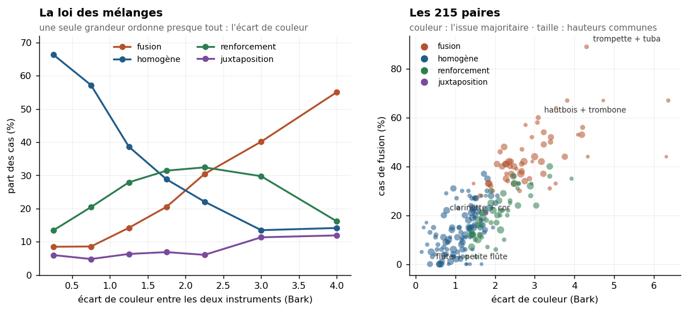

Sommaire › Synthèses

C'est la question d'orchestration qui a lancé la reprise : quand deux instruments jouent ensemble, le mélange produit-il une couleur nouvelle, ou l'un ne fait-il que renforcer l'autre ?
Nous n'avons pas d'enregistrements de mélanges d'instruments différents. Il se trouve que nous
n'en avons pas besoin, et ce n'est pas un pis-aller : le motif d'excitation auditive est
linéaire en puissance. Il vaut étalement @ spectre², et deux sources jouant ensemble
s'ajoutent en puissance, leur phase relative variant d'une note à l'autre et au cours du son.
Donc
motif(A + B) = motif(A) + motif(B), exactement, en échelle linéaire.
Le mélange se calcule par une addition. C'est aussi ce qui rend la matrice complète abordable : 215 paires et 12 926 cas sans un seul produit matriciel de plus que pour les instruments seuls.
Ce que le calcul ignore, et qu'il faut écrire avec les résultats : la cohérence de phase à l'unisson et les battements, la séparation spatiale des pupitres, et le fait que des musiciens qui jouent ensemble s'ajustent — justesse, nuance, vibrato. Le résultat porte sur le mélange spectral, qui est une condition nécessaire de la fusion timbrale, non sa totalité.
L'équilibre est un choix, pas une donnée. Les niveaux des banques sont arbitraires : sommer les spectres bruts laisserait l'échantillon le plus fort dominer pour une raison sans rapport avec la musique. Chaque parent est donc normalisé à énergie égale. La sensibilité à ce choix est mesurée en refaisant tout à 1:2 et 2:1 ; les colonnes sont dans le CSV.
La question posée opposait fusion et renforcement. La mesure en impose une troisième, et c'est la plus fréquente.
| Issue | Lecture | Critère |
|---|---|---|
| homogène | les deux ont déjà la même couleur ; le mélange la garde | écart entre parents < 1 Bark |
| fusion | la couleur du mélange n'appartient à aucun des deux — elle est neuve | mélange à ≥ 1 Bark des deux, sans maximum supplémentaire |
| renforcement | le mélange se lit comme l'un des deux ; l'autre apporte de l'énergie | mélange à < 1 Bark de l'un, ≥ 1 de l'autre |
| juxtaposition | le mélange porte plus de maxima que son parent le plus riche : on entend les deux | Δn > 0 |
La première version du classement n'avait pas « homogène » et rangeait ces cas dans « indistinct », au même titre qu'une mesure manquante. C'était une erreur de fond : deux instruments de même couleur, c'est la forme la plus forte du fondu, par identité et non par émergence. Flûte + clarinette tombait ainsi dans la catégorie fourre-tout alors que c'est l'exemple d'école du mélange homogène.
Un garde-fou a été ajouté ensuite : la chimère — un mélange qui prend son F1 d'un parent et son F2 de l'autre, donc un assemblage et non une fusion. Le critère de distance seul la manque. Vérification faite, elle ne domine aucune paire (0 à 1 %) : les cas classés en fusion sont de vraies fusions.
Une seule variable ordonne presque tout : l'écart de couleur entre les deux instruments pris séparément, mesuré dans le plan (F1, F2) en Bark.
| Écart (Bark) | Paires | Fusion | Homogène | Renforcement | Juxtaposition |
|---|---|---|---|---|---|
| 0,0 – 0,5 | 10 | 8 % | 66 % | 13 % | 6 % |
| 0,5 – 1,0 | 31 | 9 % | 57 % | 20 % | 5 % |
| 1,0 – 1,5 | 51 | 14 % | 39 % | 28 % | 6 % |
| 1,5 – 2,0 | 44 | 21 % | 29 % | 31 % | 7 % |
| 2,0 – 2,5 | 34 | 30 % | 22 % | 32 % | 6 % |
| 2,5 – 3,5 | 32 | 40 % | 14 % | 30 % | 11 % |
| 3,5 et plus | 13 | 55 % | 14 % | 16 % | 12 % |
Trois mouvements, tous monotones :
Il n'y a donc pas deux familles d'alliages mais un continuum, et une seule grandeur le gouverne. L'orchestrateur qui veut un fondu choisit deux instruments de même couleur ; celui qui veut une couleur neuve en choisit deux éloignées ; le renforcement est ce qu'on obtient entre les deux.
Les plus fusionnantes — une couleur qui n'est celle d'aucun des deux :
| Paire | Fusion | Écart |
|---|---|---|
| Trompette + Tuba basse | 89 % | 4,31 |
| Trompette + Tuba contrebasse | 67 % | 3,82 |
| Hautbois + Tuba basse | 67 % | 6,37 |
| Clarinette contrebasse + Trompette | 67 % | 4,73 |
| Contrebasson + Trompette | 64 % | 3,54 |
| Hautbois + Trombone ténor | 60 % | 3,09 |
| Basson + Clarinette contrebasse | 58 % | 3,07 |
| Contrebasse + Hautbois | 56 % | 4,21 |
| Cor + Trompette | 54 % | 3,23 |
| Trombone basse + Violoncelle | 55 % | 3,41 |
Les plus homogènes — même couleur au départ, le mélange la conserve :
| Paire | Homogène | Écart |
|---|---|---|
| Flûte contrebasse + Tuba basse | 79 % | 0,29 |
| Clarinette en Mi♭ + Tuba contrebasse | 79 % | 0,15 |
| Flûte + Petite flûte | 75 % | 0,36 |
| Clarinette basse + Clarinette en Si♭ | 72 % | 0,39 |
| Tuba basse + Tuba contrebasse | 72 % | 0,64 |
| Contrebasson + Cor | 71 % | 0,66 |
| Clarinette en Si♭ + Cor | 61 % | 0,71 |
Les familles se fondent avec elles-mêmes, ce qui est attendu et rassure sur la mesure. Mais la liste contient aussi des paires que rien ne rapproche sur le papier — clarinette en Mi♭ et tuba contrebasse à 0,15 Bark, aux deux extrémités de l'orchestre — et c'est le genre d'indication qu'une table de ce type peut apporter.
Les plus « renforcement », avec qui l'emporte :
| Paire | Renforcement | Domine |
|---|---|---|
| Flûte contrebasse + Trombone basse | 54 % | la flûte contrebasse |
| Clarinette contrebasse + Clarinette en Si♭ | 53 % | la clarinette en Si♭ |
| Flûte contrebasse + Violon | 50 % | le violon |
| Cor anglais + Flûte | 49 % | le cor anglais |
| Flûte + Violon | 47 % | le violon |
Que le violon l'emporte sur la flûte, et le cor anglais sur la flûte, se lit dans tous les traités. On le mesure ici.
| Couple de familles | Fusion moyenne |
|---|---|
| anches doubles + clarinettes | 34 % |
| anches doubles + cordes | 32 % |
| cuivres + cuivres | 31 % |
| anches doubles + cuivres | 30 % |
| cordes + cuivres | 27 % |
| clarinettes + cordes | 25 % |
| anches doubles + flûtes | 18 % |
| cordes + flûtes | 15 % |
| cuivres + flûtes | 14 % |
Les anches doubles fusionnent avec tout ; les flûtes avec rien. Le hautbois et le basson sont les meilleurs agents de couleur nouvelle de l'orchestre, et la flûte le pire — elle se fait absorber plutôt qu'elle ne transforme. Cela rejoint, par une tout autre voie, ce que l'étude avait déjà trouvé sur les flûtes : pas de formant propre, une zone d'énergie qui est une coupure de rayonnement. Un instrument sans couleur propre ne peut pas en faire naître une nouvelle.
Que les cuivres fusionnent fortement entre eux (31 %) alors qu'ils forment une famille est le résultat le plus contre-intuitif de la table. L'explication est dans l'écart : trompette et tuba sont à 4,3 Bark l'un de l'autre — plus loin que beaucoup de paires inter-familles. La famille d'orchestration n'est pas une famille de couleur.
| Question | Ce qui la trancherait |
|---|---|
| Le doublage à l'octave | relancer avec un décalage de 12 demi-tons entre les deux parents. Tout est en place |
| La table tient-elle sur un autre corpus ? | les motifs se calculent de la même façon depuis les spectres de ZSamples, VO, VN |
| Les trios et les tutti | la linéarité vaut pour n sources : la machinerie existe, c'est la combinatoire qui explose |
| L'écart de couleur prédit-il aussi la largeur du mélange, et pas seulement sa position ? | la largeur du maximum fusionné est calculable ; elle dirait si le mélange est plus ou moins « focalisé » que ses parents |